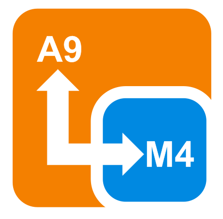

Communication
Internal cores communication
To communicate between the two SoloX cores we implemented the dedicated Serial object.
It is a virtualized serial that uses the shared memory to exchange datas on chip.
Heads up! When you have a sketch that sends data to the serial device (/dev/ttyMCC) it has to be read by the A9 part otherwise it will slow down the execution: it will time out every Serial.println().
Serial.begin(115200);
Serial.write('Hello');
Serial.print(" ");
Serial.println("A9 core!");
It' possible to access this serial by A9 side on device:
/dev/ttyMCC
External pinout communication
The iMX 6SoloX can communicate with external peripherals in different modes.
The Serial0 object allows to read and write data on pins 0 and 1 of external pinout.
Serial0.begin(115200);
Serial0.write('hello');
Serial0.print(" ");
Serial0.println("world");
Heads up! This serial is not connected with the A9 core (Linux/Android). It allows only to communicate with an external UART device!
Example
Access the Arduino capabilities of the board in one of the following ways:
- via an HDMI/LVDS screen or VNC viewer, using Arduino IDE
- access the UDOO Neo desktop;
- click on Start -> Programming -> Arduino IDE.
- use the web control panel
- connect to the board (eg. 192.168.7.2 if you are using the USB port);
- click on Arduino Editor on the left
- use the Arduino IDE installed on your computer
Then, copy and paste the following sketch in the IDE:
void setup(){
Serial.begin(115200);
Serial0.begin(115200);
pinMode(13, OUTPUT);
}
void loop(){
Serial.print("Hello");
Serial.print(" ");
Serial.println("A9!");
digitalWrite(13, HIGH);
delay(1000);
Serial0.print("Hello");
Serial0.print(" ");
Serial0.println("world!");
digitalWrite(13, LOW);
delay(1000);
}
Click the Upload button and wait untile the message Done uploading appears on the status bar.
Now, connect to the serial ports, to get the strings.
Read the internal serial port
Open a terminal in UDOO Neo (using the Teminal application on the Desktop, or a SSH connection)
minicom -D /dev/ttyMCC
You will see Hello A9!
Read the external serial port
Connect a Serial Adapter to the 0 and 1 Arduino pins and to your computer. Then open the serial port, for example using minicom:
minicom -D /dev/ttyUSB0
You will read Hello world!